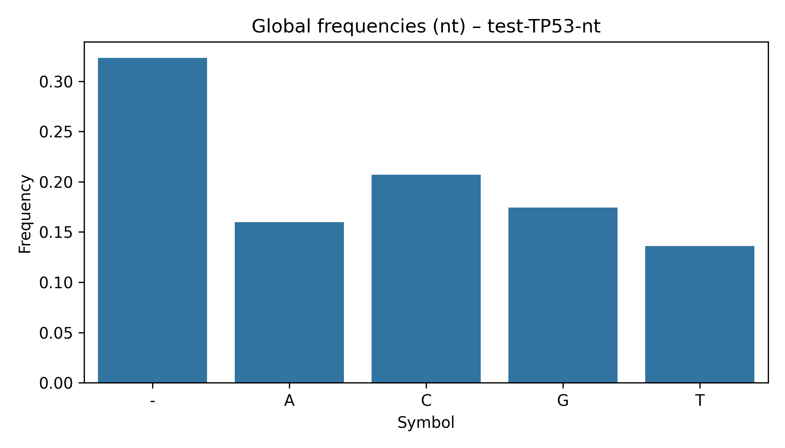
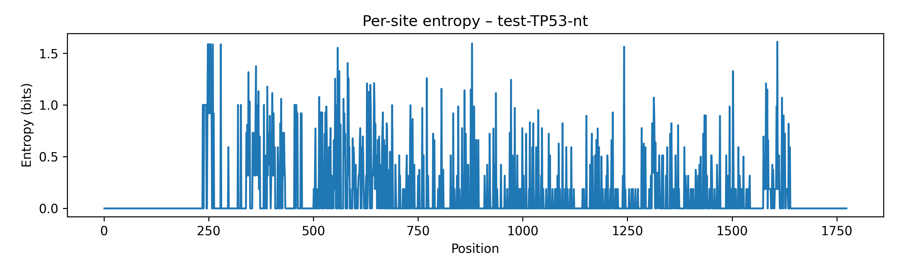
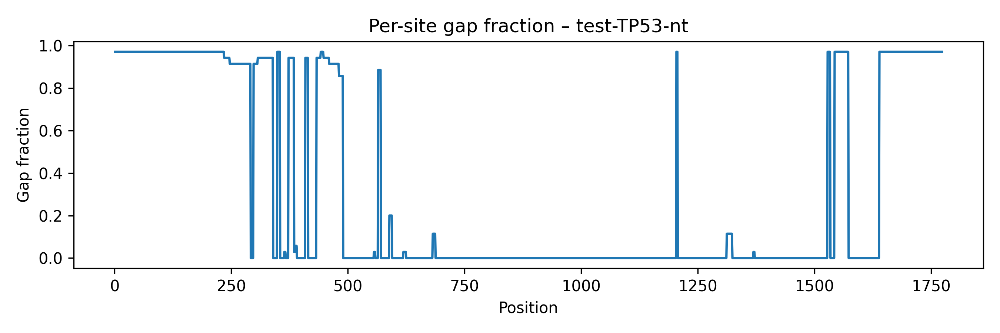
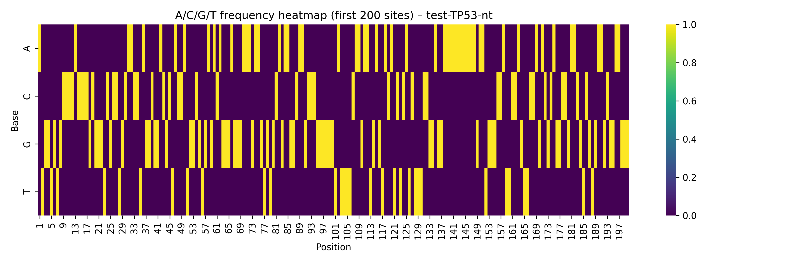

aProfiler report – test-TP53-nt
Input file: data\test-TP53-nt.fasta
Mode: nt
Tables
- global_freqs_csv –
test-TP53-nt_nucfreq_global.csv
- per_site_nt_csv –
test-TP53-nt_per_site_nt_metrics.csv
- pca_embedding_csv –
test-TP53-nt_pca_embedding.csv
- umap_embedding_csv –
test-TP53-nt_umap_embedding.csv
Plots
global_freqs_plot

entropy_plot

logo_plot

gc_track_plot

gap_track_plot

nt_heatmap_plot

pca_embedding_plot

umap_embedding_plot

seq_gap_fraction_plot

pid_hist_plot